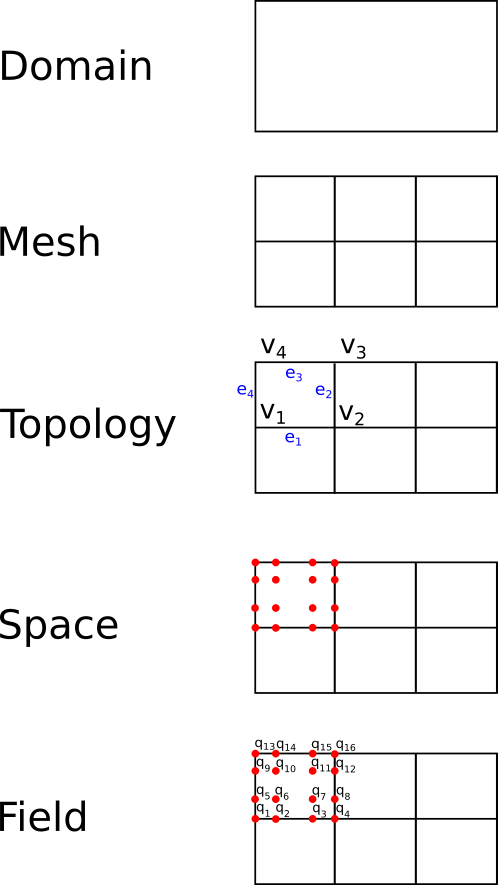

Introduction to ClimaCore.jl's API concepts
What is ClimaCore.jl?
A suite of tools for constructing spatial discretizations, entirely written in Julia.
- primarily aimed at climate and weather models
- initial aim:
- spectral element discretizations (both Continuous Galerkin and Discontinuous Galerkin) in the horizontal
- staggered finite difference in the vertical
- support for Cartesian and spherical domains
- currently under development.
A sketch of some fundamental API objects in ClimaCore.jl:
